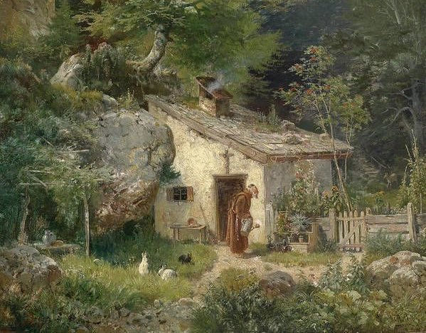

The dissolution of the monasteries in the late 1530s was one of the
most revolutionary events in English history. There were nearly 900
religious houses in England, around 260 for monks, 300 for regular
canons, 142 nunneries and 183 friaries; some 12,000 people in total,
4,000 monks, 3,000 canons, 3,000 friars and 2,000 nuns. If the adult
male population was 500,000, that meant that one adult man in fifty
was in religious orders

THE GREAT THINKERS
Bears discussing the great St. Seraphim
The Tiger watches and hunts; Whereas the hyena waits
Give a dog a fish and he eats for a day. Teach a dog to fish and
that's a damn cool dog
I awake from the land of dreams
Sing Oak and Ash and Thorn, good Sirs,
All of a Midsummer's morn!
England shall bide till Judgement Tide,
By Oak and Ash and Thorn!
-Rudyard Kipling
Follow God
Join our newsletter for daily monastic news from around the world,
invites to e-worship sessions, web blessings and words from
God as dictated by your computer